Germany · Tier IX
All nations and tiers · EU v20410 → RU v14600ru · 3 November 2026
E 50 · Tier IX
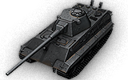
Mobility
Forward speed on medium terrain (km/h) EU 60  RU 57.85
RU 57.85
Forward speed on soft terrain (km/h) EU 28.95 RU 27.55
Engine power (hp) EU 1 000 RU 951.55
Power/weight (hp/t) EU 15.97 RU 15.20
Tank traverse (°/s) EU 45.89 RU 33.38
Tank traverse on hard terrain (°/s) EU 47.56 RU 38.54
Tank traverse on medium terrain (°/s) EU 38.05 RU 30.83
Tank traverse on soft terrain (°/s) EU 18.12 RU 14.68
Armor & health
Health EU 1 800 RU 1 750
E 50 FL · Tier IX

Mobility
Forward speed on medium terrain (km/h) EU 60 RU 57.85
Forward speed on soft terrain (km/h) EU 28.95 RU 27.55
Engine power (hp) EU 1 000 RU 951.55
Power/weight (hp/t) EU 15.97 RU 15.20
Tank traverse (°/s) EU 45.89 RU 33.38
Tank traverse on hard terrain (°/s) EU 43.60 RU 31.71
Tank traverse on medium terrain (°/s) EU 34.88 RU 25.37
Tank traverse on soft terrain (°/s) EU 16.61 RU 12.08
Armor & health
Health EU 1 800 RU 1 750
E 75 · Tier IX
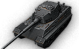
Gun handling
Dispersion (m/100 m) EU 0.37  RU 0.35
RU 0.35
Dispersion · damaged EU 0.75 RU 0.71
Mobility
Forward speed on hard terrain (km/h) EU 37.77 RU 35.94
Forward speed on medium terrain (km/h) EU 34.62 RU 32.95
Forward speed on soft terrain (km/h) EU 18.89 RU 17.97
Engine power (hp) EU 1 000 RU 951.55
Power/weight (hp/t) EU 10.92 RU 10.39
Tank traverse (°/s) EU 25.03 RU 31.29
Tank traverse on hard terrain (°/s) EU 24.31 RU 35.46
Tank traverse on medium terrain (°/s) EU 22.28 RU 32.51
Tank traverse on soft terrain (°/s) EU 12.15 RU 17.73
Armor & health
Health EU 2 000 RU 1 950
E 77 · Tier IX
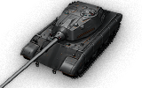
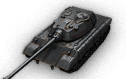
Damage (HP)
EU  AP 460 /
AP 460 /  APCR 460 /
APCR 460 /  HE 640 → RU
HE 640 → RU  AP 530 /
AP 530 /  APCR 530 /
APCR 530 /  HE 670
HE 670
Firepower
DPM (HP/min) EU 2 248.97 RU 2 047.37
Module damage EU 165 RU 180
Rate of fire (rounds/min) EU 4.89 RU 3.86
Reload time (s) EU 12.27 RU 15.53
Shell velocity (m/s) EU 1 080 RU 920
Potential damage EU 18 400 RU 21 200
Gun handling
Aim time (s) EU 2.40 RU 2.59
Dispersion (m/100 m) EU 0.37 RU 0.34
Dispersion · damaged EU 0.75 RU 0.67
Dispersion · moving EU 0.24 RU 0.22
Dispersion · tank traverse EU 0.24 RU 0.22
Dispersion · firing EU 3 RU 4
Mobility
Forward speed (km/h) EU 40 RU 45
Forward speed on hard terrain (km/h) EU 40 RU 42.58
Forward speed on medium terrain (km/h) EU 34.79 RU 39.03
Forward speed on soft terrain (km/h) EU 23.66 RU 21.29
Engine power (hp) EU 1 010 RU 800
Power/weight (hp/t) EU 15.54 RU 12.31
Terrain resist (med) EU 1.63 RU 1.15
Terrain resist (soft) EU 2.40 RU 2.11
Turret traverse (°/s) EU 26.08 RU 25.03
Tank traverse (°/s) EU 31.29 RU 34.42
Tank traverse on hard terrain (°/s) EU 29.73 RU 32.70
Tank traverse on medium terrain (°/s) EU 19.23 RU 29.97
Tank traverse on soft terrain (°/s) EU 13.08 RU 16.35
Armor & health
Hull armor · front (mm) EU 135 RU 160
Hull armor · rear (mm) EU 80 RU 50
Turret armor · front (mm) EU 290 RU 250
Turret armor · side (mm) EU 160 RU 130
Turret armor · rear (mm) EU 80 RU 50
Health EU 1 800 RU 1 850
Miscellaneous
Stationary camo EU 5.53 RU 6.16
Stationary camo · after firing EU 0.90 RU 0.94
Moving camo EU 2.74 RU 3.08
Moving camo · after firing EU 0.44 RU 0.47
Shell cost EU 1 070 RU 1 130
G.W. Tiger · Tier IX
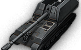
Penetration (mm)
EU  HE 53 /
HE 53 /  HE 66 /
HE 66 /  AP 296 → RU
AP 296 → RU  HE 53 /
HE 53 /  AP 296
AP 296
Damage (HP)
EU  HE 900 /
HE 900 /  HE 1200 /
HE 1200 /  AP 640 → RU
AP 640 → RU  HE 1250 /
HE 1250 /  AP 700
AP 700
Firepower
DPM (HP/min) EU 1 341 RU 1 862.50
Explosion radius EU 11.40 RU 9
Stun duration · maximum (s) EU 31 → RU —
Stun duration · minimum (s) EU 12.40 → RU —
Potential damage EU 13 500 RU 18 750
Mobility
Tank traverse on hard terrain (°/s) EU 17.19 RU 17.16
Tank traverse on medium terrain (°/s) EU 14.90 RU 14.87
Tank traverse on soft terrain (°/s) EU 8.94 RU 8.92
Armor & health
Health · ammo rack EU 230 RU 134
Miscellaneous
Shell cost EU 2 080 RU 2 390
Jagdtiger · Tier IX
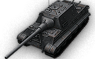
Mobility
Forward speed on hard terrain (km/h) EU 38 RU 33.92
Forward speed on medium terrain (km/h) EU 32.18 RU 28.70
Forward speed on soft terrain (km/h) EU 17.43 RU 15.54
Engine power (hp) EU 830 RU 740.10
Power/weight (hp/t) EU 10.99 RU 9.80
Tank traverse (°/s) EU 31.29 RU 27.12
Tank traverse on hard terrain (°/s) EU 31.68 RU 27.39
Tank traverse on medium terrain (°/s) EU 26.81 RU 23.18
Tank traverse on soft terrain (°/s) EU 14.52 RU 12.56
Armor & health
Health EU 2 000 RU 2 100
Health · engine EU 310 RU 260
Health · track EU 240 RU 250
Track repair time (s) EU 11.70 RU 12.03
Jagdtiger FL · Tier IX

Mobility
Forward speed on hard terrain (km/h) EU 38 RU 33.92
Forward speed on medium terrain (km/h) EU 32.18 RU 28.70
Forward speed on soft terrain (km/h) EU 17.43 RU 15.54
Engine power (hp) EU 830 RU 740.10
Power/weight (hp/t) EU 10.99 RU 9.80
Tank traverse (°/s) EU 31.29 RU 27.12
Tank traverse on hard terrain (°/s) EU 29.73 RU 25.76
Tank traverse on medium terrain (°/s) EU 25.15 RU 21.80
Tank traverse on soft terrain (°/s) EU 13.62 RU 11.81
Armor & health
Health EU 2 000 RU 2 100
Health · engine EU 310 RU 260
Health · track EU 240 RU 250
Track repair time (s) EU 11.70 RU 12.03
KJPZ TIII Jäger · Tier IX
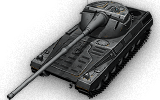
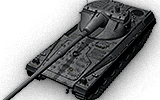
Penetration (mm)
EU  AP 268 /
AP 268 /  APCR 326 /
APCR 326 /  HE 65 → RU
HE 65 → RU  APCR 256 /
APCR 256 /  HEAT 320 /
HEAT 320 /  HE 110
HE 110
Damage (HP)
EU  AP 450 /
AP 450 /  APCR 450 /
APCR 450 /  HE 530 → RU
HE 530 → RU  APCR 390 /
APCR 390 /  HEAT 390 /
HEAT 390 /  HE 515
HE 515
Firepower
DPM (HP/min) EU 2 816.10 RU 2 179.13
Module damage EU 165 RU 160
Rate of fire (rounds/min) EU 6.26 RU 5.59
Reload time (s) EU 9.59 RU 10.74
Shell velocity (m/s) EU 1 210 RU 1 334
Normalization EU 5 RU 2
Ammo capacity EU 44 RU 60
Potential damage EU 19 800 RU 23 400
Clip size EU — → RU 3
Clip damage · damage EU — → RU 1 170
Clip damage · time (s) EU — → RU 10
Intra-clip reload EU — → RU 5
Gun handling
Aim time (s) EU 1.53 RU 1.73
Dispersion (m/100 m) EU 0.27 RU 0.31
Dispersion · damaged EU 0.54 RU 0.61
Dispersion · moving EU 0.20 RU 0.26
Dispersion · tank traverse EU 0.20 RU 0.26
Dispersion · firing EU 4 RU 7
Depression (°) EU 7 RU 10
Gun traverse · left (°) EU -30 RU -180
Gun traverse · right (°) EU 30 RU 180
Mobility
Forward speed (km/h) EU 45 RU 55
Forward speed on hard terrain (km/h) EU 45 RU 55
Forward speed on medium terrain (km/h) EU 45 RU 55
Forward speed on soft terrain (km/h) EU 29.91 RU 38.22
Reverse speed (km/h) EU 18 RU 16
Engine power (hp) EU 900 RU 1 150
Power/weight (hp/t) EU 18.07 RU 23.09
Turret traverse (°/s) EU 31.29 RU 25.03
Tank traverse (°/s) EU 41.72 RU 31.29
Tank traverse on hard terrain (°/s) EU 39.63 RU 29.73
Tank traverse on medium terrain (°/s) EU 33.54 RU 25.15
Tank traverse on soft terrain (°/s) EU 18.96 RU 14.22
Armor & health
Hull armor · front (mm) EU 30 RU 54
Health EU 1 700 RU 1 500
Health · engine EU 255 RU 360
Health · ammo rack EU 220 RU 260
Miscellaneous
View range (m) EU 370 RU 380
KPz 3 Projekt 07 HK · Tier IX
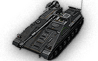
Firepower
DPM (HP/min) EU 3 465.97 RU 2 682
Rate of fire (rounds/min) EU 9.63 RU 7.45
Reload time (s) EU 6.23 RU 8.05
Gun handling
Aim time (s) EU 2.40 RU 2.45
Dispersion · damaged EU 0.67 RU 0.69
Dispersion · moving EU 0.06 RU 0.12
Dispersion · tank traverse EU 0.06 RU 0.12
Dispersion · turret traverse EU 0.05 RU 0.10
Mobility
Turret traverse (°/s) EU 16.69 RU 16.34
Armor & health
Health EU 1 700 RU 1 600
Health · engine EU 360 RU 400
Alternate mode
EU stats · RU statsFirepower
DPM (HP/min) EU 2 619.63 RU 3 313.06
Rate of fire (rounds/min) EU 7.28 RU 9.20
Reload time (s) EU 8.25 RU 6.52
Gun handling
Aim time (s) EU 1.44 RU 1.47
Dispersion · damaged EU 0.48 RU 0.49
Dispersion · moving EU 0.30 RU 0.12
Dispersion · tank traverse EU 0.20 RU 0.12
Dispersion · turret traverse EU 0.05 RU 0.10
Mobility
Turret traverse (°/s) EU 16.69 RU 16.34
Armor & health
Health EU 1 700 RU 1 600
Health · engine EU 360 RU 400
Kpz. Erich Konzept I · EU IX → RU X
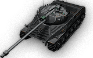
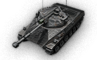
Penetration (mm)
EU  APCR 270 /
APCR 270 /  HEAT 320 /
HEAT 320 /  HE 60 → RU
HE 60 → RU  AP 254 /
AP 254 /  HEAT 320 /
HEAT 320 /  HE 76
HE 76
Damage (HP)
EU  APCR 400 /
APCR 400 /  HEAT 400 /
HEAT 400 /  HE 515 → RU
HE 515 → RU  AP 700 /
AP 700 /  HEAT 700 /
HEAT 700 /  HE 910
HE 910
General
Tier EU 9 → RU 10
Firepower
DPM (HP/min) EU 2 406.92 RU 1 991.18
Module damage EU 165 RU 203
Rate of fire (rounds/min) EU 6.02 RU 2.84
Reload time (s) EU 9.97 RU 21.09
Caliber EU 120 RU 152.40
Shell velocity (m/s) EU 1 350 RU 900
Normalization EU 2 RU 5
Ammo capacity EU 50 RU 24
Potential damage EU 20 000 RU 16 800
Gun handling
Aim time (s) EU 2.11 RU 2.88
Dispersion (m/100 m) EU 0.29 RU 0.40
Dispersion · damaged EU 0.58 RU 0.81
Dispersion · moving EU 0.14 RU 0.20
Dispersion · tank traverse EU 0.14 RU 0.20
Dispersion · turret traverse EU 0.10 RU 0.08
Dispersion · firing EU 3.50 RU 3
Depression (°) EU 10 RU 12
Mobility
Forward speed (km/h) EU 65 RU 70
Forward speed on hard terrain (km/h) EU 65 RU 70
Forward speed on medium terrain (km/h) EU 65 RU 70
Forward speed on soft terrain (km/h) EU 41.19 RU 70
Reverse speed (km/h) EU 20 RU 25
Engine power (hp) EU 1 000 RU 1 470
Weight (kg) EU 44 000 → RU 47 000
Power/weight (hp/t) EU 22.73 RU 31.28
Terrain resist (soft) EU 2.01 RU 1.54
Turret traverse (°/s) EU 39.63 RU 31.29
Tank traverse (°/s) EU 50.06 RU 33.38
Tank traverse on hard terrain (°/s) EU 47.56 RU 31.71
Tank traverse on medium terrain (°/s) EU 38.05 RU 25.37
Tank traverse on soft terrain (°/s) EU 18.12 RU 15.82
Armor & health
Hull armor · front (mm) EU 50 RU 70
Hull armor · side (mm) EU 35 RU 65
Turret armor · front (mm) EU 90 RU 70
Track armor EU 20 RU 25
Health EU 1 650 RU 1 850
Health · engine EU 310 RU 255
Health · track EU 240 RU 250
Health · ammo rack EU 230 RU 260
Track repair time (s) EU 11.70 RU 12.03
Miscellaneous
Stationary camo · after firing EU 2.33 RU 1.75
Moving camo · after firing EU 1.74 RU 1.31
Radio range (m) EU 670 RU 750
Shell cost EU 996 RU 1 680
Kunze Panzer · Tier IX
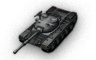
Leopard Prototyp A · Tier IX
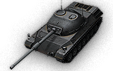
Mobility
Tank traverse on hard terrain (°/s) EU 52.01 RU 52.05
Tank traverse on medium terrain (°/s) EU 47.29 RU 47.32
Tank traverse on soft terrain (°/s) EU 23.64 RU 23.66
Mäuschen · Tier IX
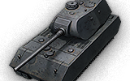
Mobility
Forward speed on soft terrain (km/h) EU 19.72 RU 18.66
Engine power (hp) EU 1 850 RU 1 750
Power/weight (hp/t) EU 10.89 RU 10.30
Tank traverse on hard terrain (°/s) EU 16.04 RU 18.41
Tank traverse on medium terrain (°/s) EU 13.57 RU 15.58
Tank traverse on soft terrain (°/s) EU 8.40 RU 9.65
Armor & health
Health EU 2 400 RU 2 300
Spähpanzer Ru 251 · Tier IX
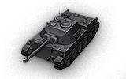
Penetration (mm)
EU  APCR 224 /
APCR 224 /  HEAT 260 /
HEAT 260 /  HE 70 → RU
HE 70 → RU  APCR 215 /
APCR 215 /  HEAT 250 /
HEAT 250 /  HE 102
HE 102
Damage (HP)
EU  APCR 280 /
APCR 280 /  HEAT 280 /
HEAT 280 /  HE 350 → RU
HE 350 → RU  APCR 240 /
APCR 240 /  HEAT 240 /
HEAT 240 /  HE 320
HE 320
Firepower
DPM (HP/min) EU 2 190.30 RU 2 145.60
Rate of fire (rounds/min) EU 7.82 RU 8.94
Reload time (s) EU 7.67 RU 6.71
Shell velocity (m/s) EU 1 180 RU 1 080
Normalization EU 5 RU 2
Ammo capacity EU 45 RU 41
Potential damage EU 12 600 RU 9 840
Gun handling
Aim time (s) EU 1.53 RU 1.92
Dispersion (m/100 m) EU 0.33 RU 0.35
Dispersion · damaged EU 0.65 RU 0.69
Dispersion · moving EU 0.11 RU 0.12
Dispersion · tank traverse EU 0.11 RU 0.12
Mobility
Tank traverse (°/s) EU 49.02 RU 45.89
Tank traverse on hard terrain (°/s) EU 49.26 RU 55.91
Tank traverse on medium terrain (°/s) EU 43.79 RU 49.70
Tank traverse on soft terrain (°/s) EU 24.63 RU 27.96
Armor & health
Track armor EU 10 RU 20
Health EU 1 600 RU 1 400
Miscellaneous
Stationary camo EU 16.81 RU 17.38
Stationary camo · after firing EU 4 RU 4.14
Moving camo EU 16.81 RU 17.38
Moving camo · after firing EU 4 RU 4.14
View range (m) EU 400 RU 410
T 55A · Tier IX
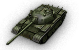
Penetration (mm)
EU  AP 221 /
AP 221 /  HEAT 330 /
HEAT 330 /  HE 50 → RU
HE 50 → RU  AP 241 /
AP 241 /  HEAT 330 /
HEAT 330 /  HE 50
HE 50
Gun handling
Depression (°) EU 5 RU 7
Tiger-Maus · Tier IX
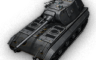
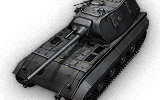
Damage (HP)
EU  AP 530 /
AP 530 /  APCR 530 /
APCR 530 /  HE 670 → RU
HE 670 → RU  AP 490 /
AP 490 /  APCR 490 /
APCR 490 /  HE 630
HE 630
Firepower
DPM (HP/min) EU 2 139.83 RU 1 953.13
Rate of fire (rounds/min) EU 4.04 RU 3.99
Reload time (s) EU 14.86 RU 15.05
Potential damage EU 31 800 RU 29 400
Mobility
Forward speed (km/h) EU 32 RU 24
Forward speed on hard terrain (km/h) EU 32 RU 24
Forward speed on medium terrain (km/h) EU 22.39 RU 23.32
Forward speed on soft terrain (km/h) EU 15.22 RU 15.86
Reverse speed (km/h) EU 16 RU 14
Engine power (hp) EU 1 200 RU 1 250
Power/weight (hp/t) EU 10 RU 10.42
Armor & health
Hull armor · rear (mm) EU 100 RU 130
Turret armor · front (mm) EU 300 RU 240
Track armor EU 40 RU 25
Health · engine EU 255 RU 320
Miscellaneous
Shell cost EU 1 300 RU 1 070
VK 45.02 (P) Ausf. B · Tier IX
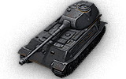
Firepower
DPM (HP/min) EU 1 953.13 RU 2 086
Rate of fire (rounds/min) EU 3.99 RU 4.26
Reload time (s) EU 15.05 RU 14.09
Gun handling
Aim time (s) EU 2.49 RU 2.21
Mobility
Forward speed on medium terrain (km/h) EU 26.21 RU 25.31
Forward speed on soft terrain (km/h) EU 17.83 RU 17.21
Engine power (hp) EU 920 RU 888.12
Power/weight (hp/t) EU 11.71 RU 11.30
Tank traverse (°/s) EU 31.29 RU 20.86
Tank traverse on hard terrain (°/s) EU 29.47 RU 25.60
Tank traverse on medium terrain (°/s) EU 19.07 RU 16.57
Tank traverse on soft terrain (°/s) EU 12.97 RU 11.26
Armor & health
Health EU 2 050 RU 1 950
Waffenträger auf Pz. IV · Tier IX
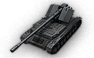
Mobility
Forward speed on soft terrain (km/h) EU 28.77 RU 27.66
Engine power (hp) EU 440 RU 422.91
Power/weight (hp/t) EU 17.39 RU 16.71
Tank traverse (°/s) EU 43.81 RU 37.55
Tank traverse on hard terrain (°/s) EU 47.65 RU 42.12
Tank traverse on medium terrain (°/s) EU 40.32 RU 35.64
Tank traverse on soft terrain (°/s) EU 22.79 RU 20.14
Armor & health
Health · engine EU 310 RU 80